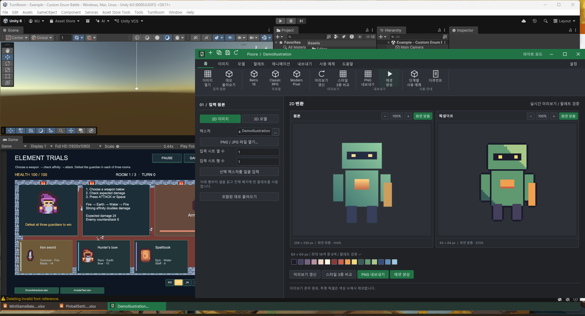
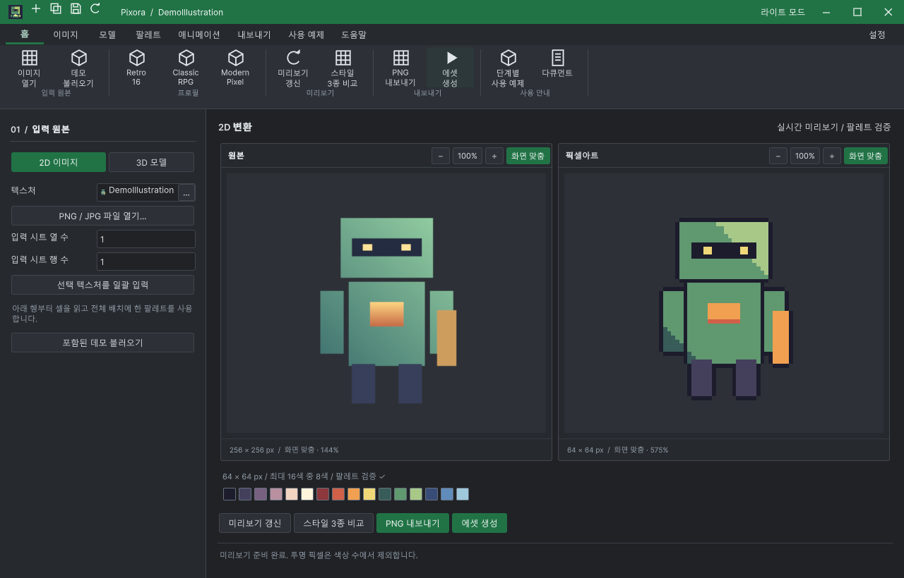

Tracefolio REPORTS & ISSUES
Tracefolio REPORTS & ISSUES최소화 목록에서 복원한 창이 화면 밖에 남는 문제 수정
종료목록 클릭 후 전경 활성화는 됐지만 저장된 창 위치가 현재 작업 영역 밖에 남아 보이지 않았습니다. 실제 사용자 창 3개를 복원하고 혼합·단독 설치의 위치 보존과 최소화 왕복을 검증했습니다.
작업 결과
공통 창 복원과 DataTable 하단 목록 복원 경로를 수정했습니다. 현재 실행 중인 사용자 Unity에 적용해 Pixora·PinballSettings·MiniGameBalance 세 창이 화면 안에 표시되고 포커스를 받는 것을 실제 클릭으로 확인했습니다. 작업 브랜치 codex/turnroom-integration의 82b6e26c에 푸시했습니다.

변경 내용
재현 조건
Windows / Unity 6000.0.83f1. 현재 사용 중인 DataTable+Pixora 통합 Unity와 별도 Pixora 단독 QA Unity. 최초 PowerShell 화면 조회에는 1920×1080 한 영역이 노출됐고, 이후 단독 Unity의 네이티브 조회에는 x=0·1920의 두 모니터가 열거됐습니다. 모니터 수를 고정하지 않고 해당 시점·프로세스의 실제 작업 영역으로 판정했습니다.
재현 순서
- 저장된 Pixora 창 위치 X=2153, DataTable 창 위치 X=2152·2150 상태에서 Unity 하단 목록을 클릭했습니다.
- 실제 전경 창·위치·크기와 현재 모니터 정보를 대조했습니다.
- 수정 뒤 같은 하단 항목 세 개를 각각 클릭했습니다.
- 실제 최소화 버튼을 누르고 하단 목록으로 복원했습니다.
- 단독 설치에서 창을 X=5000 또는 (-5000,-5000)에 둔 뒤 공통 목록을 실제 클릭했습니다. 정상적인 두 번째 모니터 위치에서는 복원 후 이동하지 않는지도 확인했습니다.
기대 동작
목록에서 선택한 창은 접근 가능한 제목줄과 함께 표시되어야 합니다. 정상적인 다른 모니터 위치와 창 크기는 유지하고 선택하지 않은 창을 일괄 이동하지 않아야 합니다.
실제 동작
수정 전 실제 목록 클릭 뒤 Pixora의 전경 상태는 true였으나 X=2153에 남아 사용자 화면에 나타나지 않았습니다. 같은 상태의 DataTable 두 창도 확인했습니다. 수정 뒤 Pixora는 X=640, DataTable 두 창은 각각 X=320으로 이동했고 크기·내용·전경 상태를 유지했습니다.
원인
기존 복원 코드는 최소화 해제·활성화·앞뒤 순서만 처리하고 창의 제목줄이 현재 모니터 작업 영역 안에 있는지 확인하지 않았습니다. 실제 네이티브 좌표와 전경 상태를 읽어 단순 포커스 실패와 구분했습니다. 원래 위치가 왜 그 좌표로 저장됐는지, 실제 모니터가 분리됐는지는 확인하지 않았으며 원인으로 단정하지 않습니다.
적용 내용
공통 WindowFrame.EnsureVisible은 같은 프로세스의 정확히 일치하는 도구 창만 대상으로 네이티브 모니터 작업 영역을 열거합니다. 제목줄의 접근 가능한 폭·높이를 확인하고 접근할 수 없을 때만 가장 가까운 작업 영역으로 이동합니다. 창 크기·Z 순서·포커스를 이 함수에서 바꾸지 않습니다. 정상적인 두 번째 모니터 창은 유지합니다.
공통 WindowFrame.Restore와 DataTable 하단 목록의 자체 Restore에 연결했습니다. DataTable 제품 소스 변경은 이 복원 경로의 호출 한 줄입니다. 문서 닫기·데이터 편집·저장 정책은 변경하지 않았습니다. 두 제품의 9개 언어 안내에 실제 새 캡처와 복원 설명을 반영했고, 이전 캡처와 소스 해시는 역사적 근거로 보존했습니다.
검증
| 범위 | 확인 결과 |
|---|---|
| 실제 사용자 하단 목록 | Pixora와 DataTable 두 창 모두 화면 안 복원·크기 보존·전경 확인 |
| 사용자 Pixora 최소화 왕복 | 실제 최소화 버튼 → 숨김 확인 → 하단 목록 클릭 → 원래 화면 안 위치 복원 |
| 단독 설치 화면 밖 복원 | X=5000 → 두 번째 작업 영역 X=2560, (-5000,-5000) → (0,0) |
| 정상 두 번째 모니터 위치 | 실제 재클릭 후 X=2560 유지 |
| 단독 설치 최소화 왕복 | 네이티브 최소화 → 공통 목록 → (0,0), 1280×820, 전경 확인 |
| Unity 실행 좌표 회귀 | 16개 통과: 음수 원점·분리 위치·부분 제목줄·과대 창·정상 위치·실제 창 이동 불필요 |
| Pixora HTML | 9개 언어·99개 장·90개 코드 예제·새 로컬 이미지 링크 통과 |
| DataTable 새 복원 캡처 | 새 이미지·소스 해시 오류 0건. 기존 과거 해시 오류 206건은 그대로 분리 |
단독 설치의 첫 자동 기대값은 단일 모니터 X=640으로 잘못 고정되어 실패했습니다. 네이티브 모니터 열거로 두 번째 모니터가 등록돼 X=2560이 유효함을 확인하고 실제 작업 영역 기준으로 다시 검사했습니다. 이 실패를 제품 실패나 통과로 바꿔 쓰지 않았습니다.
이전 전체 QA는 화면 안에 있는 창의 최소화·복원을 확인했고, 화면 밖에 남은 저장 위치 조건을 빠뜨렸습니다. 이번에 실제 화면 밖 좌표와 정상 다중 모니터 위치 보존을 회귀 조건으로 추가했습니다. 이전 전체 QA 범위와 구분합니다.

컴퓨터 유즈 스킬의 대상 확인 절차를 적용했습니다. 현재 세션에 node_repl 도구가 없고 @oai/sky 직접 import가 ERR_MODULE_NOT_FOUND여서, 대상을 제한한 Win32 SendInput/PrintWindow 경로로 실제 마우스 입력과 캡처를 수행했습니다. 자동 UI 트리 검사만으로 클릭을 대신하지 않았습니다.
이미지는 무손실 픽셀 일치를 확인했습니다. 전체 실제 화면 1920×1040은 302,993→179,902바이트, Pixora 창 1280×820은 93,157→44,348바이트입니다.
검증 범위 · Unity 16개 회귀 검사 · 실제 DataTable 복원 · 단독 복원 · 압축 검증
남은 사항
이 수정의 실제 창 복원 검증은 완료했습니다. 다른 운영체제·고DPI·물리적 모니터 연결/분리 동작 자체는 미확인입니다. 기존 DataTable 전체 문서 검사에는 과거 소스/캡처 불일치 206건이 남아 실패하며, 새 복원 캡처만 오류 0건입니다. 기존 전체 캡처 해시를 임의로 갱신하지 않았습니다. Pixora 일반 UI 캡처는 원래 시점의 해시를 보존하고 새 복원 캡처에 별도 현재 소스 해시를 기록했습니다. main 병합·Asset Store 배포는 수행하지 않았습니다.
작업 시간
- 제안 시간: 20–40분. 실제 목록 클릭 재현, 수정 적용, 혼합·단독 설치의 복원·포커스 확인, HTML 보고를 완료 기준으로 제안했습니다.
- 실제로 완료된 시간: 구현·실제 조작 QA·프로젝트 푸시까지 16분 8초. 시작 2026-10-30 13:18:33 KST, 프로젝트 푸시 완료 2026-10-30 13:34:42 KST. 중앙 HTML 생성·배포는 이후 진행하며 최종 채팅에 전체 종료 시각과 소요 시간을 별도로 기록합니다.
- XERJ: 사용 — 실제 Status와 Search("RestoreToolWindow minimized shelf")를 실행했습니다. WorkbookMinimizedShelf와 WorkbookTurnRoomBridge 후보를 현재 소스·실제 창 좌표와 대조했습니다. 네이티브 API와 문서 파일은 rg로 보완 검색했습니다.